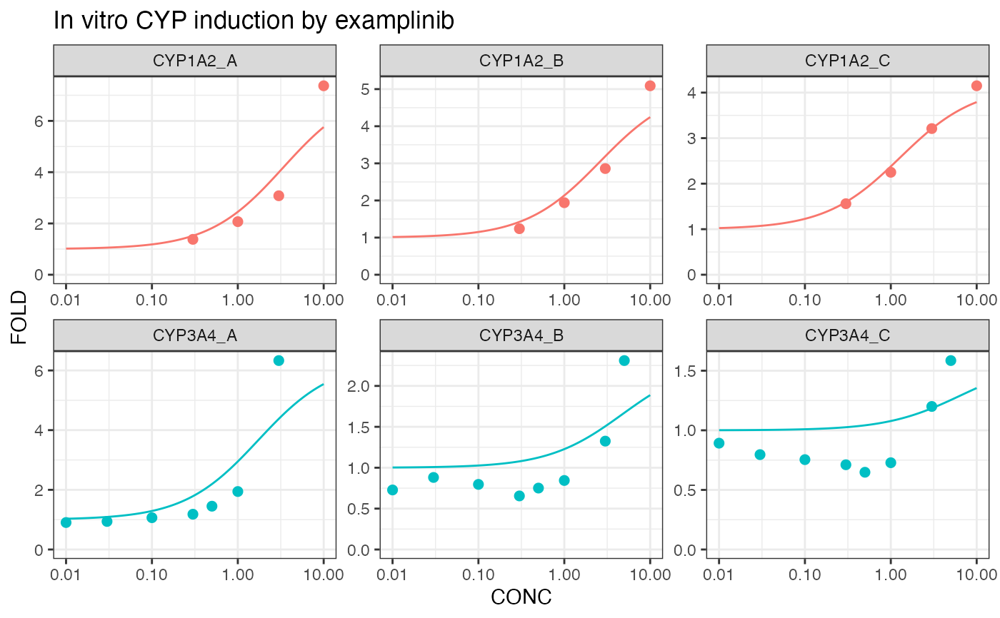

Analyze in vitro CYP induction data
indmod.Rd![[Experimental]](figures/lifecycle-experimental.svg)
$$f = 1 + \frac{(E_{max}) * C^n}{(EC_{50}^n + C^n)}$$
Value
A list with the elements:
data The original data, model and model parameters for each fit.
fold_plot A ggplot object showing the original data and the fits.
ind_param The ec50, hill (n) and emax parameters by donor and DDI object.
inducer An inducer object representing the model parameters from the donor with the highest Emax per DDI object.
Examples
indmod(induction_experiment(examplinib_in_vitro_ind, "examplinib"))
#> $data
#> # A tibble: 6 × 7
#> # Rowwise: DONOR, OBJECT, ID
#> DONOR OBJECT ID data emax_obs mod modpar
#> <chr> <chr> <chr> <list<tibble[,5]>> <dbl> <list> <list>
#> 1 A CYP1A2 CYP1A2_A [4 × 5] 6.37 <nls> <tibble [1 × 5]>
#> 2 A CYP3A4 CYP3A4_A [8 × 5] 5.33 <nls> <tibble [1 × 5]>
#> 3 B CYP1A2 CYP1A2_B [4 × 5] 4.09 <nls> <tibble [1 × 5]>
#> 4 B CYP3A4 CYP3A4_B [8 × 5] 1.31 <nls> <tibble [1 × 5]>
#> 5 C CYP1A2 CYP1A2_C [4 × 5] 3.15 <nls> <tibble [1 × 5]>
#> 6 C CYP3A4 CYP3A4_C [8 × 5] 0.585 <nls> <tibble [1 × 5]>
#>
#> $fold_plot

#>
#> $ind_param
#> # A tibble: 6 × 8
#> OBJECT DONOR term emax_obs estimate std.error statistic p.value
#> <chr> <chr> <chr> <dbl> <dbl> <dbl> <dbl> <dbl>
#> 1 CYP1A2 A ec50 6.37 3.39 1.59 2.13 0.123
#> 2 CYP1A2 B ec50 4.09 2.60 0.936 2.78 0.0691
#> 3 CYP1A2 C ec50 3.15 1.29 0.242 5.30 0.0131
#> 4 CYP3A4 A ec50 5.33 1.73 0.810 2.14 0.0761
#> 5 CYP3A4 B ec50 1.31 4.76 3.64 1.31 0.232
#> 6 CYP3A4 C ec50 0.585 6.51 9.19 0.708 0.502
#>